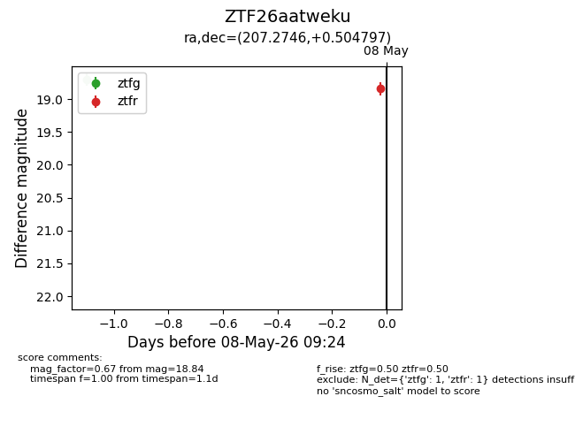
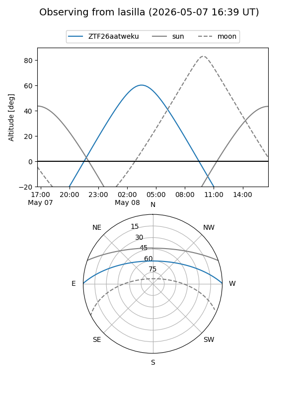
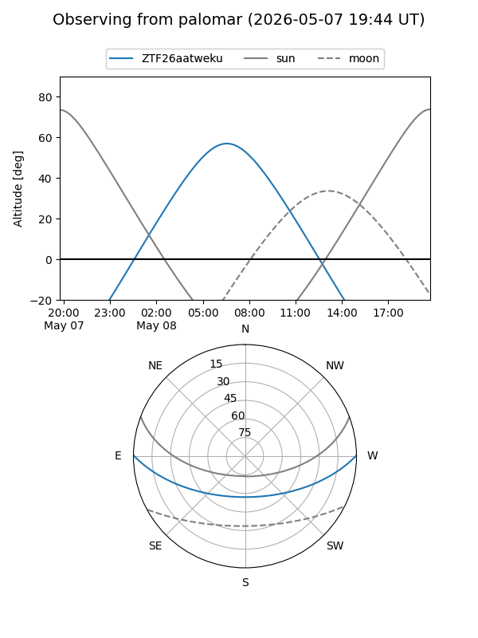
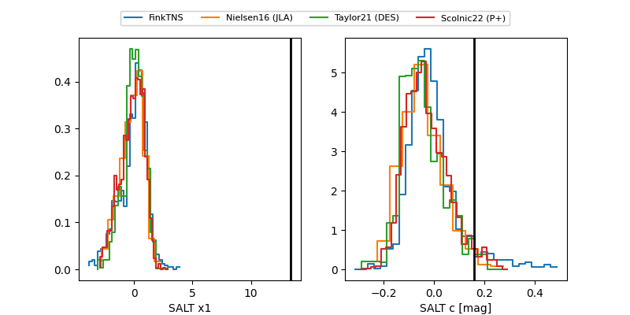

ZTF26aatweku
Target ZTF26aatweku at 2026-05-08 09:26
Aliases and brokers:
FINK: link
Lasair: link
ALeRCE: link
alt names
ZTF26aatweku (ztf,fink_ztf)
Coordinates:
equatorial (ra, dec) = 207.2746,+0.50480
equatorial (HMS+DMS) = 13:49:05.91,+00:30:17.27
galactic (l, b) = (332.7830,+59.99168)
Flags:
Photometry:
last ztfg=18.70, ztfr=18.84
1 ztfg, 1 ztfr detections
Lightcurve

Visibility


Additional plots
